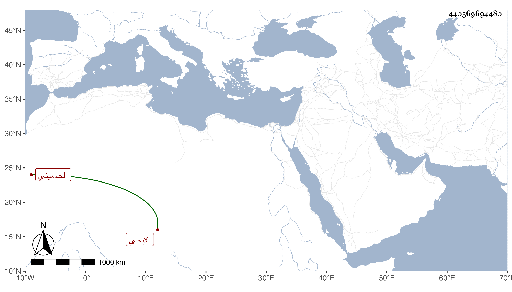

0902Sakhawi.DawLamic.ITO20230111-ara1.EIS1600.440569694480
Biography ID: 440569694480
إبراهيم بن محمد بن عبد الله بن محمد بن عبد الله معين الدين أبي ذر بن نور الدين أبي عبد الله الحسيني الايجي أخو العفيف محمد وغيره أجاز له ابن أميلة وأبو البقاء السبكي وابن كثير والبرهان بن جماعة والنشاوري والعراقي وآخرون وسمع على والده . ومات في ذي الحجة سنة ست . ذكره العفيف الجرهي في مشيخته وأنه قرأ عليه .
